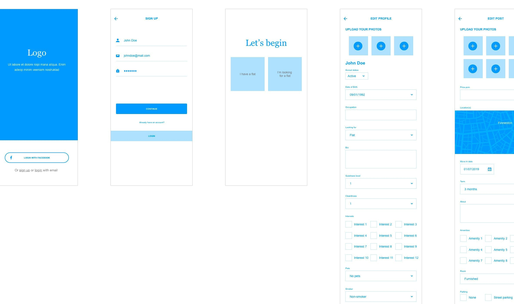

Millennials are finding it difficult to find like minded roommates and flats that they like in Glasgow. When looking for a roommate they want them to be safe, respectful, have the same noise attitude, have a similar cleanliness level, and have similar interests. When looking for a flat they want an ideal location, a price that fits their budget, amenities they need, and a space that they love. They also want technology such as an app that works to aid them in their search.
I acted as the sole teammate on this project. As a UX designer I was responsible to research current solutions, to define the user, to find and capture user pain points, and to create a solution from these findings through ideation, wireframing, and design.
The biggest constraint was time and because I knew the client was primarily looking for my skills as a UI designer so I focused on that rather than a perfect UX process in the time allocated. Because there was less time, I will be sharing a few screens rather than a complete app.
Based on the assignment being a more visual orientated task, many assumptions were made on behalf of the user that ideally in a real project, would have come out of user testing.
Competitive analysis was done to research:
The biggest pain points that came from this research was that:
This information was beneficial and could easily be applied in an app solution to better the user's search experience.
To better keep the users at the forefront of my mind, I made two personas. While some is based on research, a lot of assumptions have been made to go through the design thinking aspects for this project.
Persona 1
Samantha owns a flat and is looking for a roommate. She’s 30, an admin assistant, and currently dating. Her main motivation for finding a roommate is to reduce costs. Her goal is to find a like-minded roommate who is respectful to her, and to her flat. Samantha’s expectations for the app is that it’s easy to use, that there’s enough information for her to get an idea if the person meets her requirements, and that it’s free. Her main frustration is anything that’s too time consuming. She is organized and quite savvy with mobile technology.
Persona 2
The second persona is Jane. She is looking for a flat. Jane is 27, a chemistry student, and is single. Her motivation for finding a flat is that she wants to be within walking distance to her school and to find a roommate that she gets along with. Jane’s goal is to find an affordable flat close to her university with a respectful female roommate around the same age. She expects that she can easily search by location and price and that she can get detailed information about potential roommates. Jane is frustrated when things that should be simple are too complicated. She is busy, savvy, and generally scatterbrained.
Here’s what Samantha, the flat owner’s user journey looks like:
Here’s what Jane, the flat seeker’s user journey looks like:
I used the above information to help guide the wireframes and designs to answer the user needs.
The wireframes below show a login and sign up screen and some preliminary roommate profile and flat post screens.
In the prototype GIF below, you can see the profile details page. There is a photo, name, age, and profession of the roommate. You can see if they're looking for a flat and a quick overview of their details. When "Details" is clicked you can see more information about them as well as what they're looking for in a roommate and in a flat. Lastly, under "Reviews" you can see any reviews left by past roommates. All this information should help users feel safer. It will also free the time it takes them to think of which questions to ask and the time it takes to ask the potential roommate(s) those questions.
There are also CTAs to favourite the roommate, flag them (if they look to be fake accounts, inappropriate, etc.), to pass the profile, and to message them.
View the XD prototype here.
The second prototype demo below shows the flat feed. Here is where you can view available flats. You can view the location, the rent amount, and the date that the flat is available. There are CTAs to favourite the flat (by pressing the heart icon on the photo), to pass the flat (greys out the post to help the user remember which they don't want), and an option to message the flat owner.
View the XD prototype here.
The main answers to the pain points are:
Because the app is targeted at millennials I used a sleek and modern font paired with interesting colours. The psychology behind the colour teal is that it promotes communication, commitment, peace, and harmony. I chose the pink to reflect the "People Make Glasgow" city branding.
On the profile page I have highlighted the information that users are looking for- the answers to their questions. This way they can scan the page for a quick summary of exactly what they’re looking for. I received feedback that this works as intended. Because there is a lot of data, I created both an overview section with critical information for the user to quickly view and a "Details" section with the rest of the information.
I also recommend making this app free so that there are more users and subsequently, more roommates and flats to choose from which creates a more attractive app to download. With all of these features that answer the pain points, this should be a successful design solution for millennials looking for a roommate or flat in Glasgow.
I learned to continue to always ask any questions you have. I asked what exactly the company was looking for, and because of this I knew where to focus my efforts for the best outcome of this project.
With more time, I would have loved to take users through different scenarios to ensure this is the solution that they're looking for. At the least, I would have measured how much time the user was spending on the app, which filters they were using, and which features they were using.
Alana Dawes
ScottishPower
ScottishPower
ATB Financial
ATB Financial
Lorne Rubis
ATB Financial